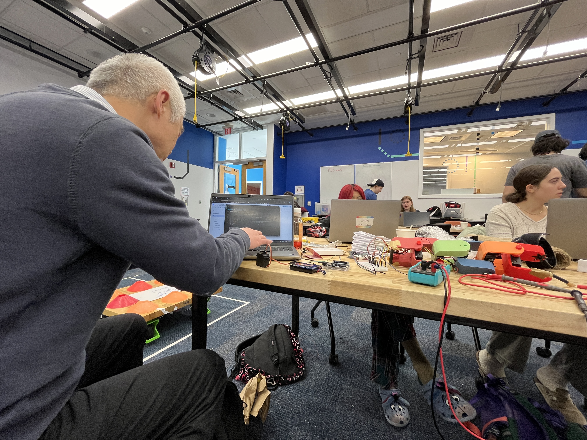
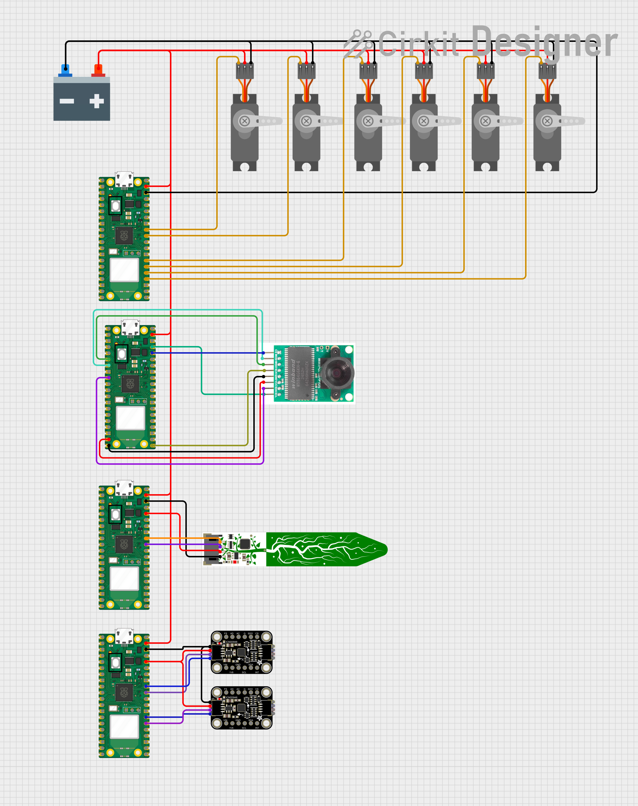
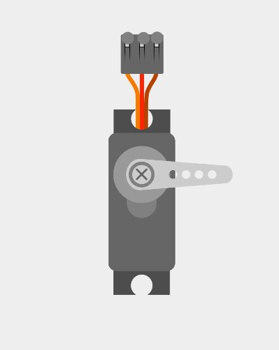
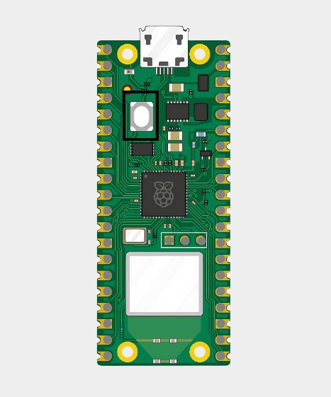
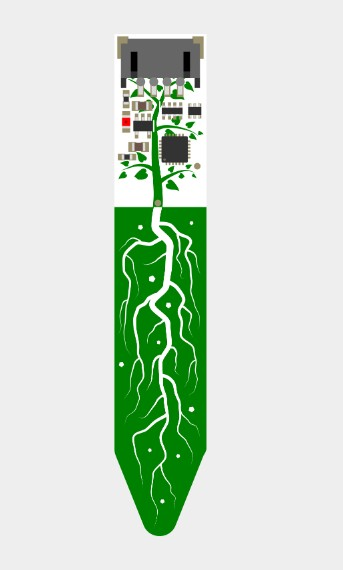
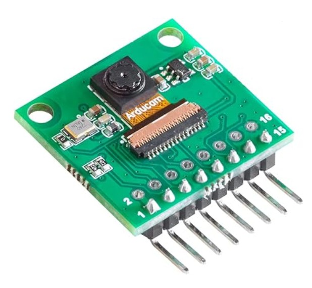
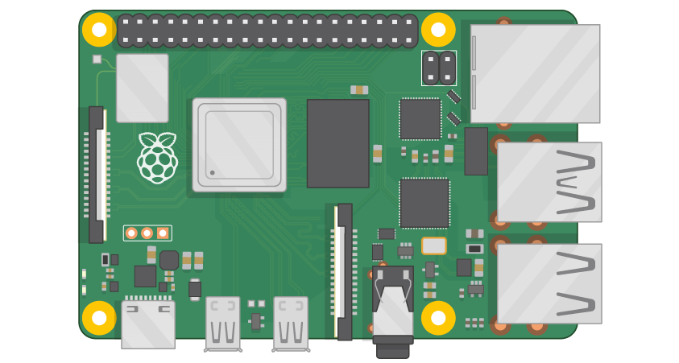

Circuit Diagram
Electrical components that powered the snakes motion, soil sensor, camera, and location tracking.
Core Components
Core goals behind each design decision we made.


Servo Motor
We used six servo motors to control the joint motion of the snake. alternated positioning of the servos on each link, so that the snake has both vertical and horizontal range of motion.

Raspberry Pi Pico W
We used four Raspberry Pi Pico boards to control the angle of the servo motors and to recieve data from the camera, sensor, and IMUs.

STEMMA Soil Moisture Sensor
We used the Adafruit STEMMA soil moisture sensor to take measurements of soil moisture, based off of capacitance measured.

Arducam for Raspberry Pi Pico Camera
We used a camera that connects to our Pico boards to communicate a visual to the user and aids them in controlling the snake.

Raspberry Pi 4
We used a Raspi as a ground station - mostly because we couldn't get our computers to connect to the picos.